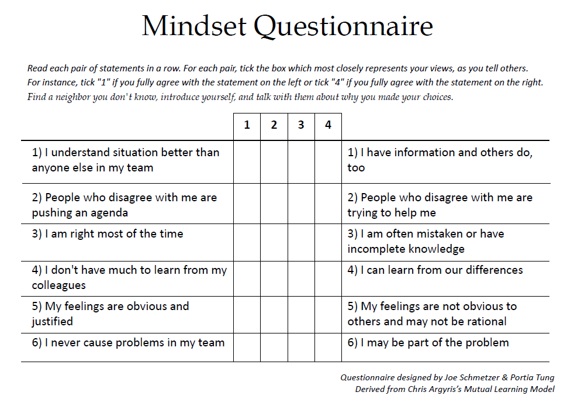
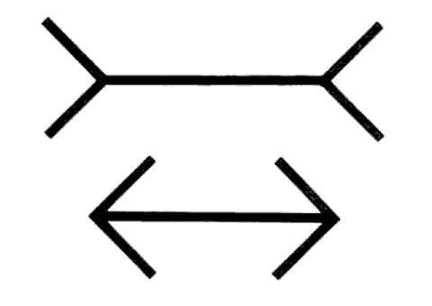
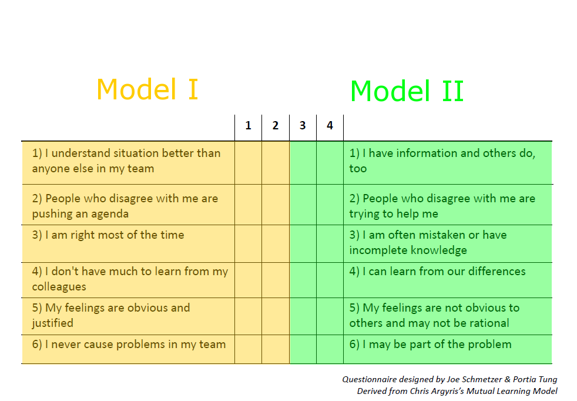
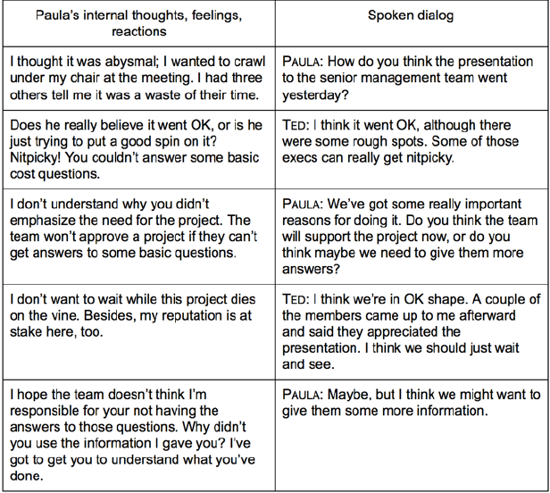
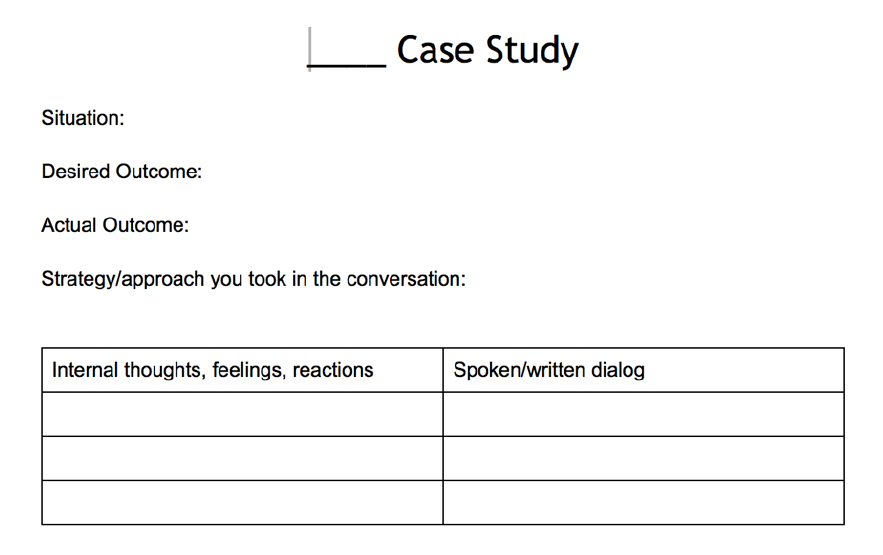

The Fellowship of the Ring
The Quest for Effective and Happy Teams
Joe Schmetzer @tumbarumba
About Me
Joe Schmetzer
Renaissance Developer
Development Lead
Securities Operations IT
What is your Mindset?


Müller-Lyer Illusion
Thinking, Fast and Slow

- System 1: fast, involuntary, no effort, biased
- System 2: slow, voluntary, effortful, lazy
- Most of what you think and do originates in System 1 with System 2 called upon to prevent errors
- The error prevention sucks
- This is a major cause of conflict between people
Cognitive Biases
Cognitive Biases
- Overconfidence
Cognitive Biases
- Overconfidence
- Illusion of certainty
Cognitive Biases
- Overconfidence
- Illusion of certainty
- Illusion of asymmetric insight
Cognitive Biases
- Overconfidence
- Illusion of certainty
- Illusion of asymmetric insight
- Illusion of transparency
Cognitive Biases
- Overconfidence
- Illusion of certainty
- Illusion of asymmetric insight
- Illusion of transparency
- Pro-innovation bias
Cognitive Biases
- Overconfidence
- Illusion of certainty
- Illusion of asymmetric insight
- Illusion of transparency
- Pro-innovation bias
- ... and many, many more

Agyris Model I - Values
- Win, don’t lose
- Be right
- Minimise expressions of negative feelings
- Act rational
Agyris Model I - Assumptions
- I understand the situation; those who disagree don’t
- I am right; those who disagree are wrong
- I have pure motives; those who disagree have questionable motives
- My feelings and behaviour are justified
- I am not contributing to the problem
Agyris Model I - Consequences
- Lower commitment
- Decreased trust
- Reduced learning
- Greater defensiveness
- Unproductive conflict
- Inappropriate dependence on others
- Performance
- Lower-quality decisions
- Less innovation
- Longer implementation time
- Increased costs
- Reduced motivation
- Decreased satisfaction
- Limited development opportunities
- Increased stress
Agyris Model I - Consequences
- Lower commitment
- Decreased trust
- Reduced learning
- Greater defensiveness
- Unproductive conflict
- Inappropriate dependence on others
- Performance
- Lower-quality decisions
- Less innovation
- Longer implementation time
- Increased costs
- Reduced motivation
- Decreased satisfaction
- Limited development opportunities
- Increased stress
Agyris Model II - Values
- Transparency
- Curiosity
- Informed choice
- Accountability
- Compassion
Agyris Model II - Assumptions
- I have information; so do other people
- Each of us sees things others don’t
- People may disagree with me and still have pure motives
- Differences are opportunities for learning
- I may be contributing to the problem
Agyris Model II - Consequences
- Greater commitment
- Increased trust
- Increased learning
- Reduced defensiveness
- Productive conflict
- Appropriate dependence on others
- Higher-quality decisions
- Greater innovation
- Shorter implementation time
- Reduced costs
- Increased motivation
- Increased satisfaction
- Richer development opportunities
- Reduced stress
Agyris Model II - Consequences
- Greater commitment
- Increased trust
- Increased learning
- Reduced defensiveness
- Productive conflict
- Appropriate dependence on others
- Higher-quality decisions
- Greater innovation
- Shorter implementation time
- Reduced costs
- Increased motivation
- Increased satisfaction
- Richer development opportunities
- Reduced stress
Agyris Model I vs Model II
- Model I (Unilateral Control) is our default model in use
- It is better for happiness and productivity to be working towards Model II (Mutual Learning)
Mindset Questionnaire Revisited
Mindset Questionnaire Revisited

Paula and Ted
from "The Skilled Facilitator", by Roger Schwartz
Paula and Ted Review
- What did you see and hear?
- What were the goals of each character?
- Who has meetings mostly like this one?

The Eight Behaviours for Smarter Teams
- Focus on interests, not positions
- Test assumptions and inferences
- Jointly design next steps
- Discuss undiscussable issues
- State views and ask genuine questions
- Share all relevant information
- Use specific examples and agree on what important words mean
- Explain reasoning and intent
Eight Behaviors for Smarter Teams, Roger Schwartz, 2013
http://www.schwarzassociates.com/resources/articles/
Paula and Ted Revisited
from "The Skilled Facilitator", by Roger Schwartz
Paula and Ted Revisited Review
- What did you see and hear?
- What were the goals of each character?
- Who has been to a meeting like this?
- Who wants their meetings to be more like this one?

Two Column Case Study Example
from "The Skilled Facilitator", by Roger Schwartz
Two Column Case Study Practice
from "Frustrated, It is probably your fault", by Jeffrey Fredrick
http://blog.jeffreyfredrick.com/2015/06/25/slides-frustrated-it-is-probably-your-fault/
Reflection: What did we learn?
- Unconcious biases make us often wrong
- Unconcious biases make think we're right
- ... which causes conflict and trust problems
- Agyris's Model I and Model II help us understand the situation
- Schwarz's Eight Behaviours help us overcome our biases
- We need to practice!

Want to Learn More?
This talk!
http://tumbarumba.github.io/fellowship-of-the-ring
London Action Science Meetup Group http://www.meetup.com/London-Action-Science-Meetup/
Eight Behaviours for Smarter Teams (free download) http://www.schwarzassociates.com/resources/articles/
Smart Leaders Smarter Teams by Roger Schwarz
More about Action Science http://www.actionscience.com/actinq.htm
Amy Cuddy's Power Pose Ted talk https://www.ted.com/talks/ amy_cuddy_your_body_language_shapes_who_you_are